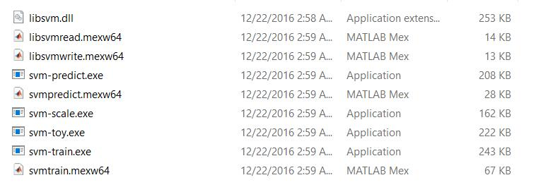
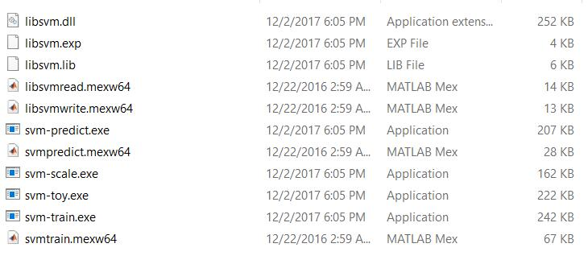
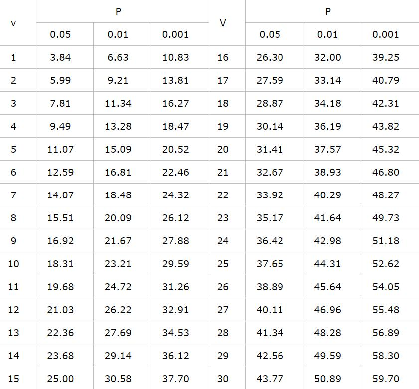

一、简介
SVM 是 Cortes 和 Vapnik 于1995年首先提出的，它在解决小样本 、非线性及高维模式识别问题中表现出许多特有的优势，并能够推广应用到函数拟合等其他机器学习问题中。支持向量机方法是建立在统计学习理论的 VC 维理论和结构风险最小原理基础上的，根据有限的样本信息在模型的复杂性和学习能力之间寻求最佳折衷，以期获得最好的泛化能力。
libsvm 是台湾大学林智仁博士等开发设计的一个操作简单、易于使用、快速有效的通用 SVM 软件包，可以解决分类问题(C−SVC、ν−SVC)，回归问题(ε−SVR、v−SVR)以及分布估计(one−class-SVM)等问题，提供了线性、多项式、径向基和 S 形函数四种常用的核函数供选择，可以有效地解决多类问题、交叉验证选择参数、对不平衡样本加权、多类问题的概率估计等。libsvm 是一个开源的软件包，不仅提供了 libsvm 的 C++语言的算法源代码，还提供了 Python、Java、R、MATLAB、Perl、Ruby、LabVIEW以及 C#.net 等各种语言的接口，可以方便的在 Windows 或 UNIX 平台下使用，也便于科研工作者根据自己的需要进行改进。
二、预处理
1.语料准备
我是使用搜狗实验室的 新闻数据 作为学习语料的，这份语料来自搜狐新闻2012年6月—7月期间国内、国际、体育、社会、娱乐等18个频道的新闻数据，提供URL和正文信息，适用于文本分类、事件检测跟踪、新词发现、命令实体识别等任务的学习。
2.分词处理
分词相关的算法不少，这也是一个可以深入研究的课题，而分词结果的好坏也直接影响后续任务的效果。如果自己没有现成的模型，可以使用公开的分词工具，如 结巴分词，该工具提供了Python、Java、C++等多种安装方式，可自行选择。Github 上有详细的教程，我这里不再重复演示。
3.特征提取
特征提取是整个文本分类中最关键的一步。虽然 SVM 在高维模式识别上具有优势，但对于文本分类的词库来说，有十几万的词量是很常见的，我们需要把 对类别区分度高的词 挑选出来，简单来说，如果一个词语在大多数类别的文章中都频繁出现，那么这个词语对于类别是没有区分度的，相反，如果一个词语仅在少数类别的文本中出现，那么这个词语就是有用的。
特征选择的方式有很多，下面仅对卡方检验（chi）做简单介绍，卡方检验的核心思想就是 利用概率论中的χ²分布来衡量实际值与理论值的差异程度。举个例子，假设我们有一堆文本，需要判断文本包含某个词语（如吴亦凡）是否与该文本的类别（如娱乐)有关，我们通过简单统计可以得到下面的四格表：
| 组别 | 属于娱乐 | 不属于娱乐 | 合计 |
|---|---|---|---|
| 不包含吴亦凡 | 19 | 24 | 43 |
| 包含吴亦凡 | 34 | 10 | 44 |
| 合计 | 53 | 34 | 87 |
观察这个表格，直观上我们可以得到这样一个信息：包含吴亦凡的文本属于娱乐类别的比例高于对立面。
下面我们首先假设 文本是否包含吴亦凡 与 文本是否属于娱乐类 是独立的，可以计算随机抽取一个文本，属于娱乐类别的概率是 $ （19 + 24） / （19 + 34 + 24 + 10） = 60.9 \% $。那么根据无关假设，我们可计算上述表格中各项数据的理论值，得到下面的四格表：
| 组别 | 属于娱乐 | 不属于娱乐 | 合计 |
|---|---|---|---|
| 不包含吴亦凡 | $43 * 0.609 = 26.2$ | $43 * 0.391 = 16.8$ | 43 |
| 包含吴亦凡 | $44 * 0.609 = 26.8$ | $44 * 0.391 = 17.2$ | 44 |
| 合计 | 53 | 34 | 87 |
下面我们可以通过卡方检验来验证区别其差异有无统计学意义，检验的基本公式如下
其中A为四格表中的实际值，T为对应的理论值，a、b为第一行两个数据，c、d为第二行两个数据。通过计算我们可以得到上述表格的χ²值为10.01。得到χ²值之后，我们可以通过查询卡方分布的临界值表（见附录）判断该值是否合理。自由度计算公式 V =（行数 -1）* （列数-1），显然上述四格表的自由度 V = 1。通过查表得到 P = 0.01 的临界值为 6.63，而10.01 > 6.63，也就是说 文本是否包含吴亦凡 与 文本是否属于娱乐类 无关的可能性小于$1\% $，独立性假设不成立。
χ²分布的介绍就到这里，下面回到正题。对应到文本分类中，我们需要计算每个词的 a、b、c、d值：
- 在这个分类下包含这个词的文档数量
- 不在该分类下包含这个词的文档数量
- 在这个分类下不包含这个词的文档数量
- 不在该分类下且不包含这个词的文档数量
计算之后，我们可以得到每个分类下每个词的卡方分布值，除去 停用词 (对于分类没有帮助的词语)，每个类别取前1000个词（可根据实际情况调整）作为该类别的特征词，然后合并所有类别的特征词，去重，生成特征的唯一id。如下例：
- 1 逐项
- 2 深市
- 3 九寨沟
- 4 岛内
- 5 期望
- …
注意，序号从1开始标注，这是libsvm的数据格式要求。
4.生成训练数据
首先直接给出 libsvm 的数据格式：1
2lable1 index1:featureValue1 index2:featureValue2 index3:featureValue3 ...
lable2 index1:featureValue1 index2:featureValue2 index3:featureValue3 ...
对应到文本分类上：1
类别ID 特征序号1:特征值1 特征序号2:特征值2 特征序号3:特征值3...
其中特征序号必须是严格升序。那么，这里的特征值是什么呢？可以采用TF-IDF值，详细的介绍看 这里。这里仅给出计算公式：
$ 词频(TF)= \frac{某个词在文章中的出现次数}{文章的总词数}$
$ 逆文档频率(IDF)= log（\frac{语料文本总数}{包含该词的文档数+1}）$
$ TF-IDF = 词频(TF)* 逆文档频率(IDF) $
这样，我们就将文本数据转换为了可训练的 libsvm 数据格式，下面给出一个数据示例：1
2+1 1:0.708333 2:1 3:1 4:-0.320755 5:-0.105023 6:-1 7:1 8:-0.419847 9:-1 10:-0.225806 12:1 13:-1
-1 1:0.583333 2:-1 3:0.333333 4:-0.603774 5:1 6:-1 7:1 8:0.358779 9:-1 10:-0.483871 12:-1 13:1
三、libsvm 安装
这里主要讲一下 windows 下 python 版本的 libsvm 安装，环境如下：
- Windows 10 64位
- Python 3.5 64位
- Visual C++ 14
首先到官网下载 libsvm 源码，windows目录下已经有编译好的32位动态链接库，如下图

但如果你使用的是 64位 python，就需要自己进行编译了。windows下编译工具 Visual C++ Tools 2015 ，对应 python 3.5。 打开终端 VS2015 x86 x64 Cross Tools Command Prompt ，进入到下载好的 libsvm 根目录，输入命令：
nmake -f Makefile.win clean all
编译之后，得到下图，注意日期：

剩下的步骤很简单了，首先将动态链接文件 libsvm.dll 拷贝到系统目录，C:\windows\system32\，然后将python目录下 svm.py 和 svmutil.py 拷贝到你的 python 包目录下。好的，大功告成。
注意，如果你无法编译64位动态链接文件，这里 我已经编译好了，亲自验证 python3.4 和 python3.5 均可以使用，虽然 python3.4 对应的编译环境是 Visual C++ 10。
四、libsvm 使用示例
1 | def train(data_path, model_path, param_str=''): |
上面仅仅是一个代码示例，详细用法请参考文档说明，根目录和 python 目录下都有 README 文件。
此外，对 tools 目录下的 grid.py 文件用法进行简单说明，这个文件依赖于 svm-train.exe 文件，帮助我们更加快捷的找到最佳训练参数，python 环境下运行:
python grid.py training_file
输出结果中最后一行即为最佳参数，当然你可以根据实际情况对 grid.py 代码进行修改。
另外，windows目录下有一个 svm-scale.exe 可执行文件，用于规范化特征值到指定范围，如：
svm-scale -l 0 -u 10 -s range_file training_file > training_scale
svm-scale -r range_file testing_file > testing_scale
上述两条命令将数据的特征值规范到 0-10 之间，-l、-u 参数是特征值上下界，-s range_file 是将范围存到文件中，便于规范测试数据时使用，-r range_file 即读取范围文件。更详细的用法请查看 libsvm 根目录下 README 文件。
五、附录
1. 相关代码实现
2. 卡方分布临界值表
